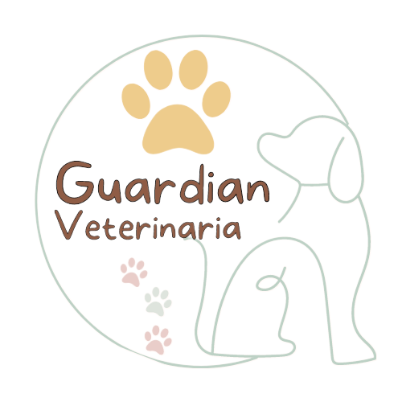

<div class="toolbar-container">
  <mat-toolbar class="header-toolbar">
    <button mat-icon-button (click)="snav.toggle()">
      <mat-icon class="icon">menu</mat-icon>
    </button>
    <p class="user">Veterinaria</p>
  </mat-toolbar>
  <mat-sidenav-container class="sidenav-container">
    <mat-sidenav #snav class="sidenav" >
      <mat-nav-list class="nav-list">
        <div>
          
        </div>
         <mat-list-item routerLink="/home/propietario" routerLinkActive="active">Registro propietario</mat-list-item>
         <mat-list-item routerLink="/home/paciente" routerLinkActive="active">Registro mascotas</mat-list-item>
      </mat-nav-list>
    </mat-sidenav>
    <mat-sidenav-content class="content">
      <router-outlet></router-outlet>
    </mat-sidenav-content>
  </mat-sidenav-container>
</div>
